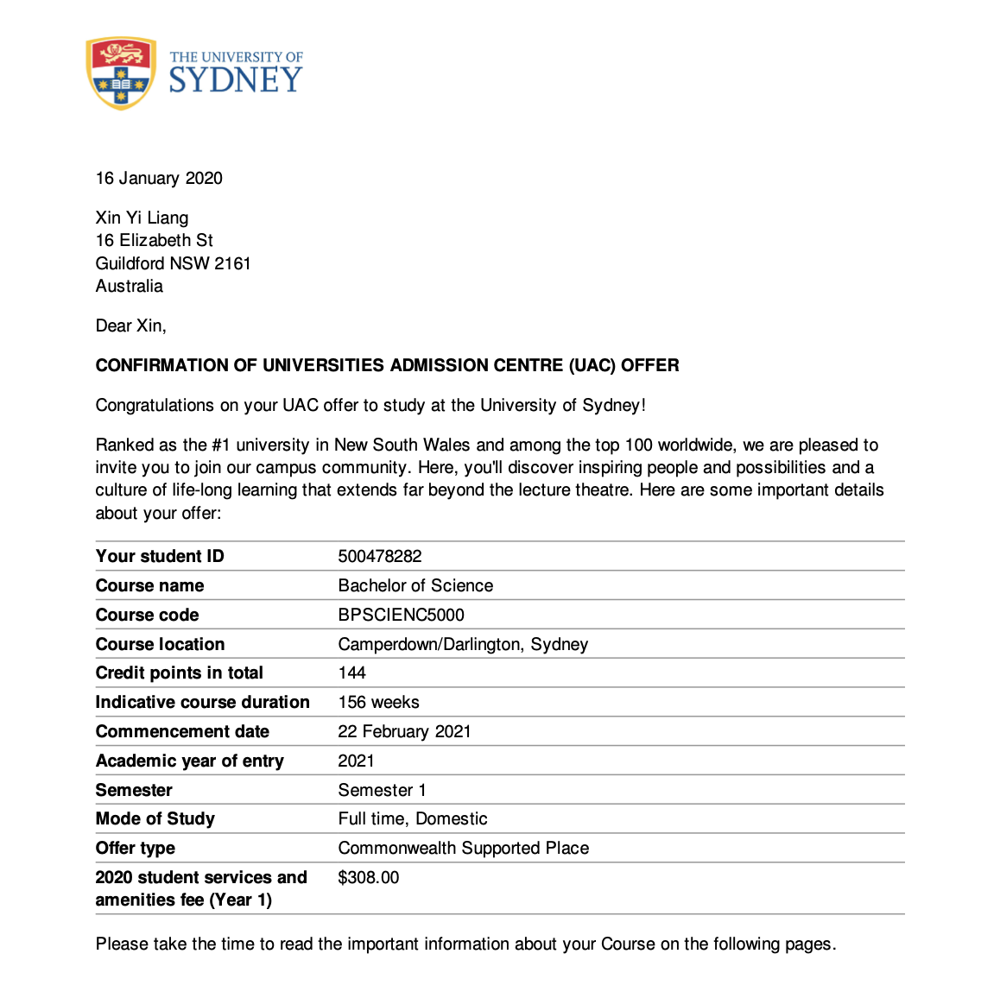
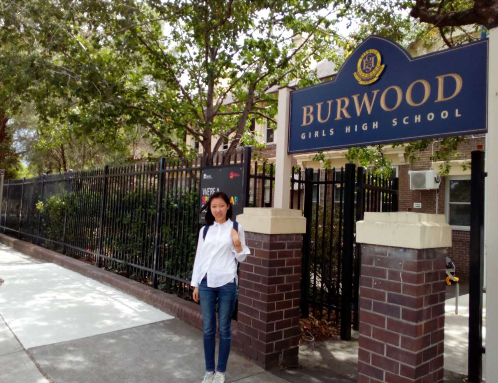

Sep 2022-Now
Université de Strasbourg - Computer Science Major
📍Strasbourg, France
2020-2021
Gap Year
📍Dalian, China
I used my time at home to learn French by myself, obtained the DELF B2 level certificate, and learned various computer basics in advance on online learning platforms such as edx and coursera. I have always been passionate about learning new knowledge and skills. During this year, I obtained certificates of computer science-related courses from Harvard, Stanford, MIT and other universities. These studies gave me a solid foundation in computer science-related knowledge before entering university.


Feb 2018-Dec 2019
Burwood Girls High School
📍Sydney, Australia
The two years at BGHS were precious to me. After graduation, I got an offer from the University of Sydney with excellent results, but due to various reasons, I finally chose to study in France. During my high school, I also worked as a tutor at Wesley Mission (School for Seniors). This experience allowed me to improve and enhance my collaboration and communication skills.
 
2016-2017
Dalian No.12 High School
📍Dalian, China